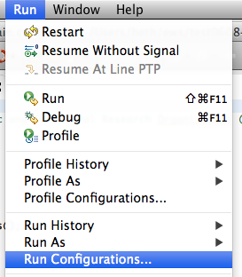
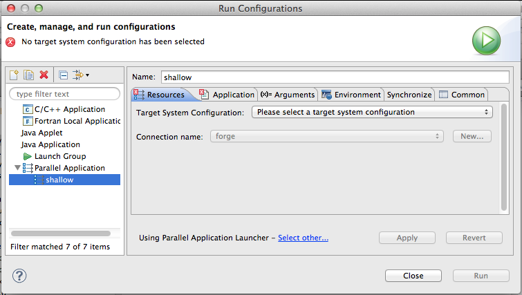
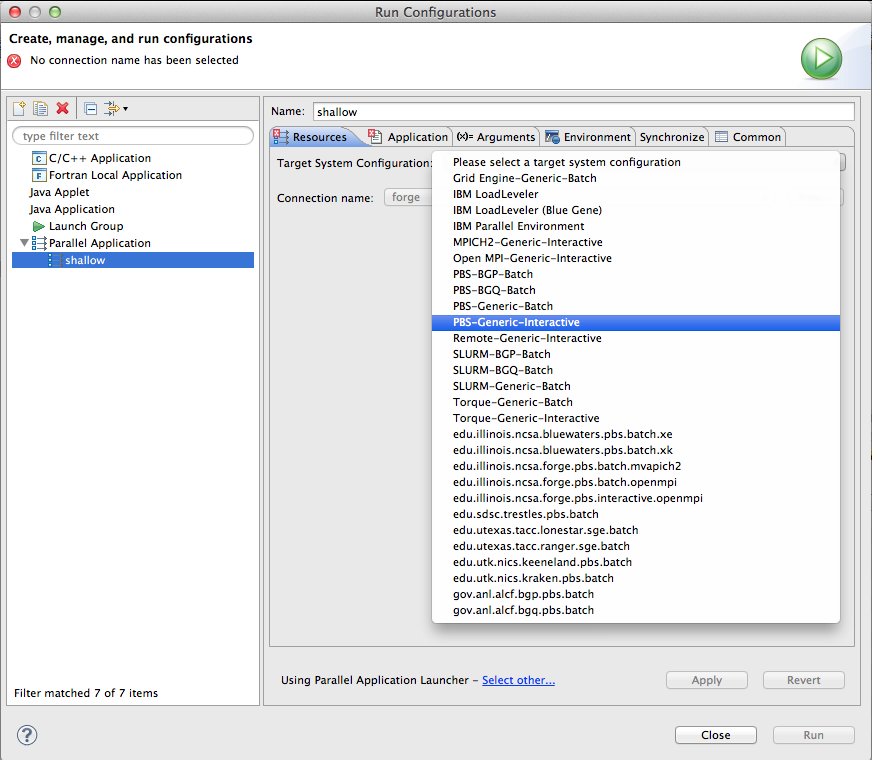
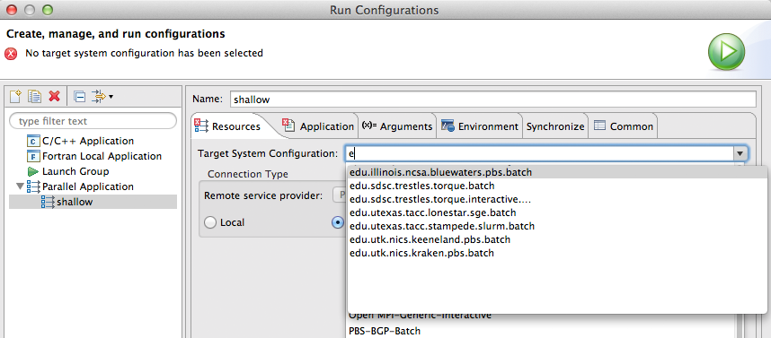
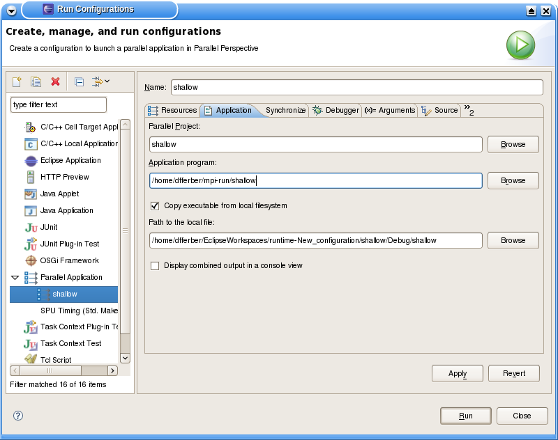
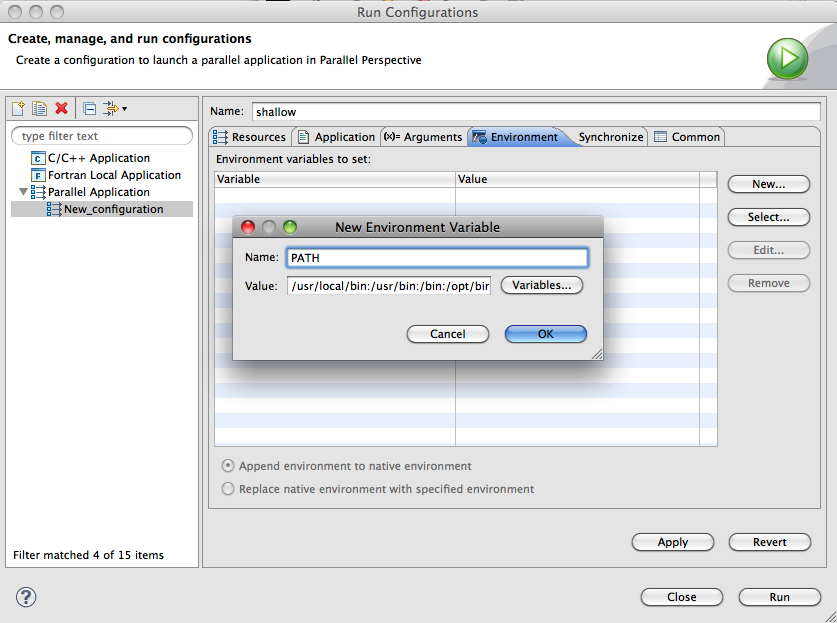
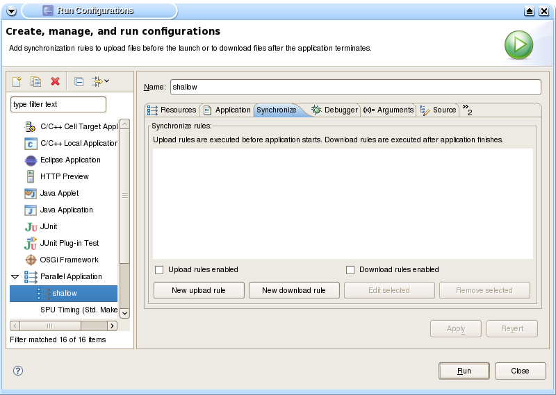
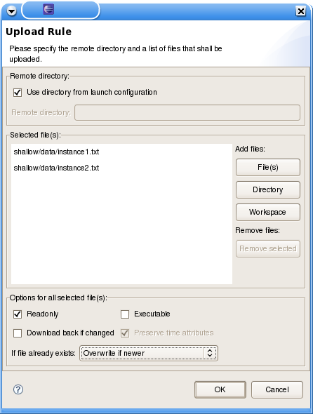
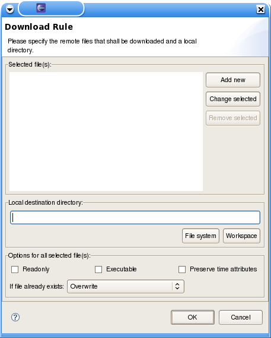

Running Parallel Programs
This section describes how to run a parallel program. In PTP,
this is called "running a job".
Previous releases of PTP required setting up a Resource Manager for each job scheduler/runtime environment before
a job could be launched.
In PTP 6.0 and later this is not handled separately, and instead a
Target System Configuration
is specified on the Run Configuration page. Further interaction to set up the parallel
job is highly dependent on which TSC is selected.
PTP is
able to launch parallel applications that use a variety of programming
models (e.g. MPI, OpenMP, UPC, etc.) provided that the Target System Configuration
supports the programming model. It is also possible to launch multiple
copies of a sequential program so that they execute simultaneously.
Eclipse uses a run configuration (also known as a launch configuration)
to encapsulate all the
settings and arguments necessary to launch a job normally or under the
control of a debugger. A run configuration is created using the Run
> Run Configurations... menu.
This section only describes how to launch a parallel program. A
description of how to monitor the application launch is provided in
Monitoring Jobs and Systems.
A description of how to debug an application is provided in
Parallel Debugging.
Topics include:
- Creating a Parallel Application
run configuration
- Completing the Resources tab - selecting the target system configuration
- Completing the Application
tab
- Completing the Arguments tab
- Completing the Environment
tab
- Completing the Synchronize
tab
- Running the application
Step 1: Create a Parallel Application run
configuration
-
To set up a run configuration, open the Run Configurations
dialog using Run > Run Configurations...

or click the run
icon's context menu on the tool bar (small triangle next to the icon) and select Run Configurations....

-
Create a new Parallel Application run configuration by
clicking Parallel Application and then clicking on the New
button icon.

-
Enter a name for the configuration in the Name: field.
Here we use the same name as the project. If the project was selected in the Project Explorer, it may be already filled in here.

Step 2: Complete the Resources tab
The Resources tab is used to specify the resources
required for the job execution. After selecting the target system configuration, the contents of this tab will vary for
different target configurations, and your installation may have added others.
PTP supported Target System Configurations
PTP includes a number of target configurations
for different systems that support various parallel runtime systems and job schedulers. The following table lists the common configurations along with
links to additional help documentation.
Note that the associated runtime or job scheduler needs to be available on the target system prior to using PTP:
-
Select a Target System Configuration
you wish to use from the drop-down.

Note that if you type a lone character (or a few) into the selection box, the list of target system configurations
will be limited to those that start with the character.

-
Select the connection to use for the target system.
If you have previously configured a synchronized or remote project, then a connection should be
available, and may be already be selected.
(To launch on the local machine, select Local for the connection type.)
You can create a new connection here by clicking the New... button.
-
Once you select the connection, you may be prompted to open the connection if it is not already open. The contents of the Resources
tab will then populate with controls that allow you to configure the necessary launch information for the target system.
This area usually (depending on the target system configuration) includes further tabs to
segment the other information you can provide.
Fill in the information required by the target system configuration.
Step 3: Complete the Application tab
The Application tab is used to specify the application
(executable) to be launched.
-
Ensure that the correct Parallel Project is selected.
This is the project containing the source and binaries for the
application.
-
Select the Application Program (executable) you wish to
launch. If the target system connection points to a remote target, then
this means the path of the executable on the remote target.
Otherwise, for a connection pointing to the local machine, it should be
the path to the executable within the project directory.
The Browse... button can be used to select the executable file.
-
If you are running the application on a remote machine and the
project was built locally, then you will have to copy the
executable to the remote machine first. For this purpose, you may
enable Copy executable from local filesystem and fill Path
to the local file with the path to the executable within the project
directory. This configures the launcher to copy the executable
automatically to the remote target before starting the run/debug
session. If not enabled, then you will need to copy the executable
manually to the remote target.

-
If you wish to have the output from all processes in a single
output console, ensure that the Display output from all
processes in a console view option is checked.
Step 4: Complete the Arguments tab
The Arguments tab is used to specify any command-line
arguments require by the parallel application and to modify the working
directory.
-
Enter any arguments required by the application in the Program arguments field.
This is a free form text field that will be
passed to the application verbatim.
-
Select a different working directory if desired. The working
directory is set just prior to the application launch. Note that for a
remote launch, this will be a directory on the remote machine.

Step 5: Complete the Environment tab
The Environment tab is used to specify any environment
variables require by the parallel application or in order to run the
application. The tab also provides the option to append the environment
variables to the native environment, or to replace the native
environment with the variables specified in the tab.
-
Use the New... button to create a new environment
variable.
-
Use the Select... button to import environment variables.
-
Use the Edit... button to edit an environment variables.
-
Use the Remove... button to remove an environment
variables.

Step 6: Complete the Synchronize tab
The Synchronize tab is used in scenarios where the
connection refers to a remote target. The tab specifies
rules that describe files or directories that need to be copied (uploaded)
to the remote target before starting the parallel application execution.
Typically, this feature is used to upload dependencies (like dynamic
libraries) or input data for test cases.
Note that this may not be necessary for Synchronized Projects,
in which files are copied back and forth to the remote system independently of the
launching mechanism.
This tab also allows to specify rules describing files on the
remote host to be retrieved back (downloaded) to the local host
after the parallel application finishes execution, as output data
produced by the parallel application execution.
-
If you wish to enable file transfer to the remote target, enable
the Upload rules enabled or Download rules enabled
according which direction of file transfer is required.

-
In order to specify files to be copied from the local system to
the remote target (uploaded), click on New upload rule.
An upload rule lists a collection of files or directories that shall be
copied into a single directory.
If Use directory from launch configuration is enabled,
then the listed files or directories are copied to the working
directory specified on the launch configuration. At the moment, this is
equivalent to same directory that contains the executable for the
parallel application. If not enabled, they you must specify on Remote
directory a path where the files or directories will be placed. The
path may be absolute or relative (to the working directory).
In the list underneath, Selected file(s), add the files
or directories that shall be copied. Click on File(s) to select
one or more individual files from anywhere in the local file system.
The Directory button works similarly to select a directory from
the local file system. Directories are copied recursively. The Workspace
button allows easily choosing files from the current workspace.
On the bottom of the dialog, you may wish to set attributes to
be applied to the copied files on the remote target. The options Readonly
or Executable sets all copied files to read-only or executable
on the remote host. If Preserve time attributes is enabled, then
the remote copy will assume the same time stamp then the local file,
otherwise, the time stamp will be the time the file was copied. Also,
if the file already exists on the remote target, you may choose how to
react in the If file already exists dropdown.

-
In order to specify files to be copied from the remote target to
the local system (downloaded) after the parallel application
finishes, click on New download rule.
An download rule lists a collection of files or directories that
shall be copied into a single local directory. Its options are very
similar to the upload rule.

Step 7: Launching the application
The launch configuration is now complete.
Select the Run button (in the bottom right corner of the Run Configurations dialog to launch the job.
Switch to the System Monitoring perspective
to view the status of the job and inspect the program output.
Back to Top | Back to Table of Contents